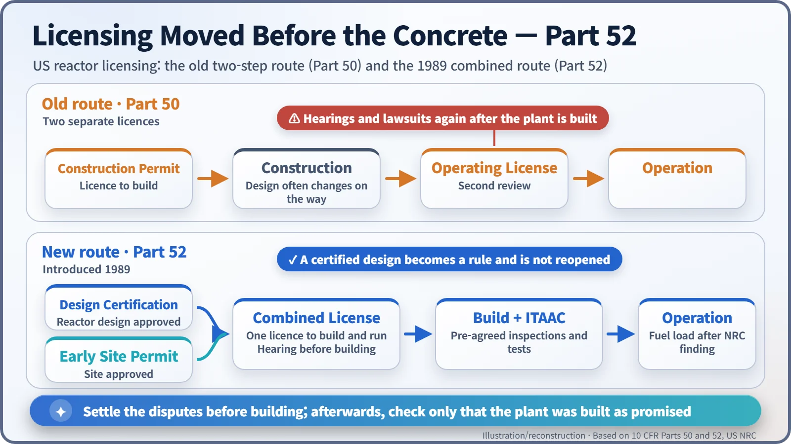
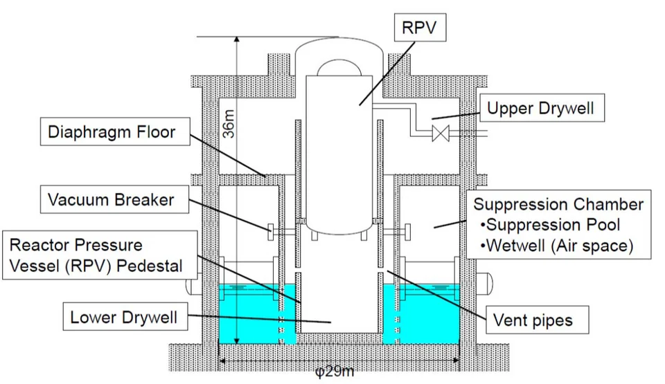
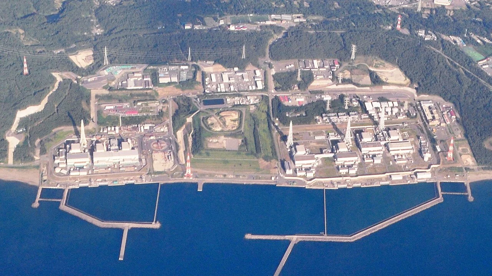
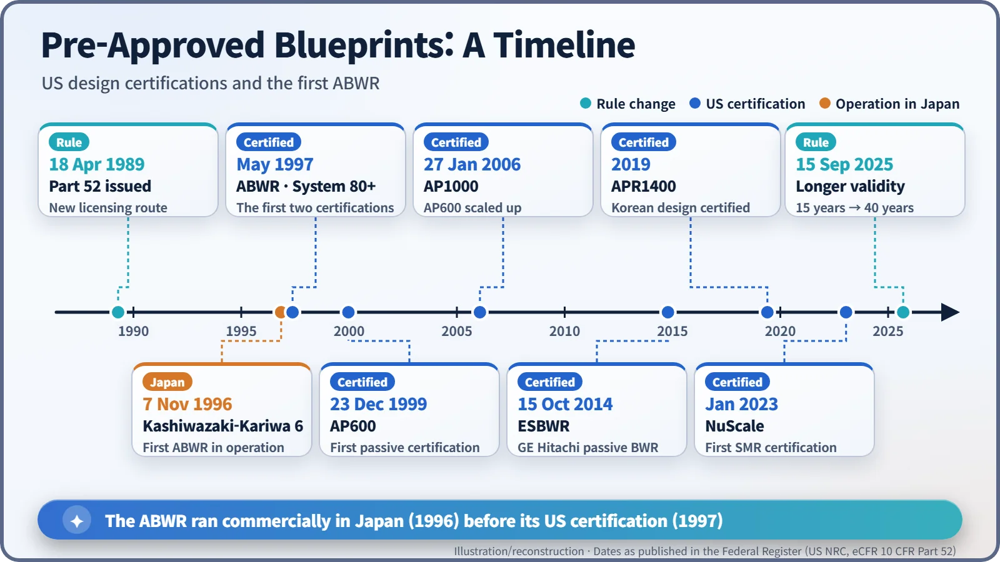

Nuclear History · 276
Reactors in the Rulebook's Appendix — Design Certification of Generation III Reactors (ABWR, System 80+, AP600)
After years of plants being challenged only once they were built, the US moved licensing before the concrete: designs were certified once and written into the rulebook itself.
On 18 April 1989 the US Nuclear Regulatory Commission published 10 CFR Part 52, which let a reactor design be approved once, in advance, and then built under a single combined licence. The first designs to pass were GE's ABWR and Combustion Engineering's System 80+ in May 1997 and Westinghouse's passive AP600 in December 1999. None of the three was built in the United States, yet the ABWR was already running in Japan, and the certificates paved the way for the AP1000 and APR1400.
Reactors in the rulebook
Leaf through Title 10, Part 52 of the US Code of Federal Regulations to the very end and you meet something odd. After the legal sections come Appendix A, Appendix B and Appendix C, and each one is named after a nuclear reactor: the ABWR, the System 80+ and the AP600. Entire reactor designs have been turned into federal rules. To see why, you have to go back to the nightmare that American nuclear builders lived through in the 1970s and 1980s. [7]
Build first, argue later
Under the older rules (10 CFR Part 50), a US utility needed two licences. It first obtained a construction permit and started building. Only when the plant was finished did it apply, separately, for an operating licence. That second gate was the trouble. After billions of dollars had been spent, public hearings and lawsuits could open all over again. And because almost every plant had its own design, the regulator started each review more or less from scratch.
Shoreham on Long Island, which was completed but never ran commercially, is often cited as the extreme case of what this system could produce. It was rather like having your house plans inspected only after the house was built.
1989: reversing the order
On 18 April 1989 the US Nuclear Regulatory Commission (NRC) published Part 52 in the Federal Register. It created three new routes: [5]
- Standard design certification: a reactor design is reviewed once, independently of any site, and then fixed in a rule.
- Early site permit: the suitability of a piece of land is settled in advance.
- Combined licence (COL): a certified design and an approved site are joined in a single licence to build and operate.
Bolted onto the combined licence are ITAAC, short for inspections, tests, analyses and acceptance criteria. Checks such as "this pipe must pass this pressure test" are written down before construction. When the plant is finished, the question is simply whether it was built as promised, and the NRC must find the ITAAC met before fuel can be loaded. Public hearings happen before construction; just before operation, challenges are limited to claims that the ITAAC have not been met. The rule was challenged in court, but a federal appeals court upheld it in 1992, and the Energy Policy Act passed that same year wrote the combined licence into law.

The first three certificates
General Electric's Advanced Boiling Water Reactor (ABWR) went first. GE filed its application in pieces from September 1987, and the certification rule appeared in the Federal Register on 12 May 1997. The design produces 3,926 megawatts of heat and places its recirculation pumps inside the reactor vessel, doing away with large external recirculation piping. [1] Nine days later, on 21 May 1997, Combustion Engineering's pressurized water reactor System 80+, a design in the 1,300-megawatt-electric class, became the second certified design, with features for coping with severe accidents built in from the start. [3]
The third was different in spirit. Westinghouse's AP600, rated at 600 megawatts electric and certified on 23 December 1999, relies on "passive" safety systems. In an accident it uses gravity, natural circulation and compressed gas, rather than pumps and diesel generators, to keep the core cool. [4] It is a design that trusts water to run downhill even when the power is off.

The reactor that ran before its certificate
There is a twist. The ABWR was making electricity in Japan before it was certified in the United States. At Tokyo Electric Power Company's Kashiwazaki-Kariwa site, Unit 6 entered commercial operation on 7 November 1996 and Unit 7 followed on 2 July 1997, each with a gross output of 1,356 megawatts electric. [8] They are often called the world's first Generation III reactors, although where "Generation III" begins depends on whose definition you use, so the label is best read as a convention. Unit 6 resumed commercial operation on 16 April 2026; as of November 2026 Unit 7 remains shut down.

Back in the United States, none of the three certified designs was built. In the 1990s no American utility was ordering new nuclear plants. The certificates went into a drawer.
What the certificates in the drawer left behind
They were not wasted. The AP600 grew into the larger AP1000, certified in January 2006, and in 2012 the combined licences for Vogtle 3 and 4 referenced that certified design. Combustion Engineering's System 80 line, which South Korea adopted through a technology-transfer programme in the 1980s, carried on through the design concepts of the System 80+ into the APR1400, which received US design certification in 2019. The ESBWR followed in 2014, and the NuScale small modular reactor in 2023. [2]

The rule kept evolving too. A design certification was originally valid for 15 years; from 15 September 2025 it is valid for 40. [6] The first step of the "nuclear renaissance" was not a new reactor but a new order of approval. Still, the later history of new-build projects shows that a pre-approved design did not by itself cure construction delays or cost overruns.